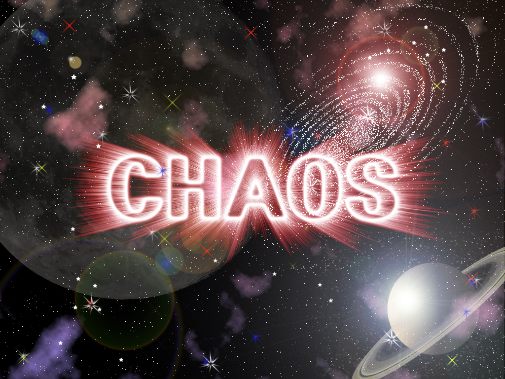
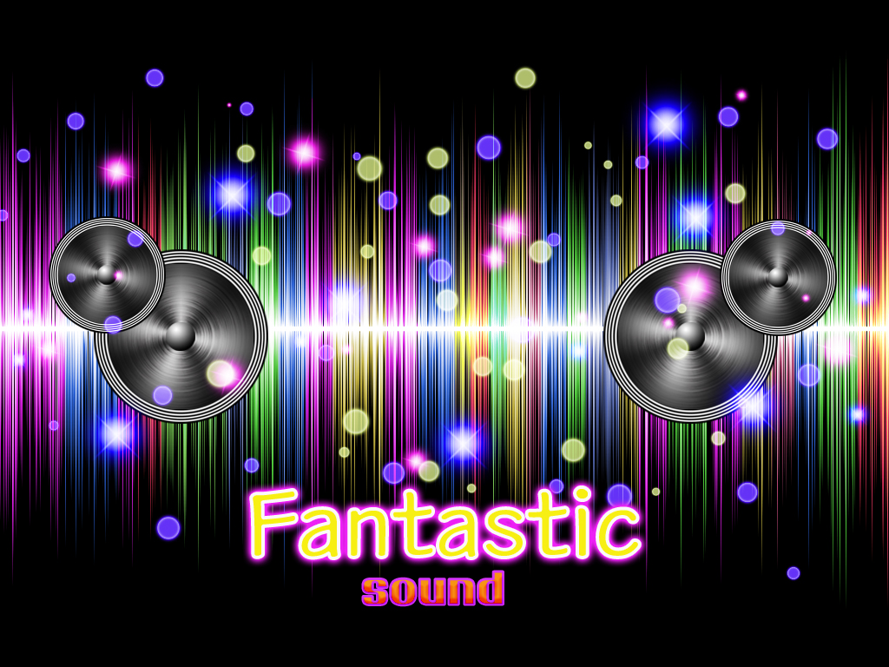
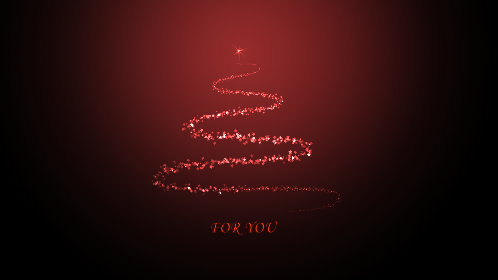
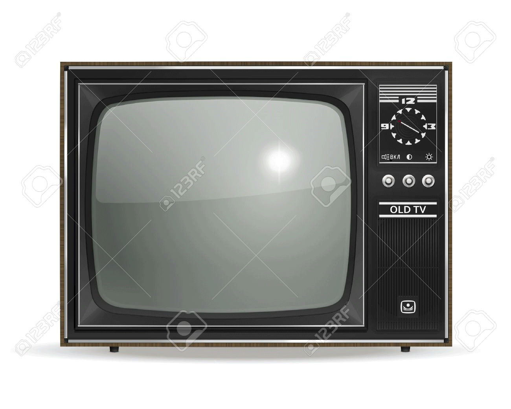

-

Skills used - Filter & Adjustment layer 사용
제작의도 - Filter의 여러 기능과 Adjustment layer 를 이용하여
다양한 색상과 효과를 주어 우주를 표현함.
완성 소요시간 - 3시간
-

Skills used - Filter & Adjustment layer 사용
제작의도 - Filter > wind 를 이용하여
다이나믹한 음악을 시각적으로 표현함.
완성 소요시간 - 5시간
-
Skills used - Select and mask 사용
제작의도 - Select and mask 를 이용하여
머리카락 누끼따기를 표현함.
완성 소요시간 - 2시간
-
Skills used - 목업적용
완성 소요시간 - 20분
-
Skills used - 여러 Mask 사용
제작의도 -시슬리 홍보 포스터 모작.
완성 소요시간 - 3시간
-

Skills used - Brushes Tool 사용
제작의도 - Brushes Tool 을 이용하여
어둠속에서도 빛나는 빛의 크리스마스 트리를 표현함.
완성 소요시간 - 20분
-

Skills used - Time line 사용
제작의도 - Time line 을 이용하여
여러사진을 동영상처럼 표현함.
완성 소요시간 - 1시간